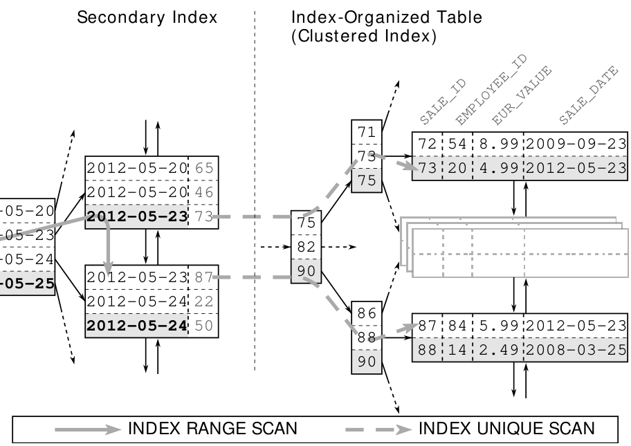

Chương 5: Phân cụm Dữ liệu
Truy cập một chỉ mục phụ không cung cấp một ROWID mà là một khóa logic để tìm kiếm chỉ mục phân cụm. Tuy nhiên, một lần truy cập là không đủ để tìm kiếm chỉ mục phân cụm—nó yêu cầu một lần duyệt cây đầy đủ. Điều đó có nghĩa là truy cập một bảng thông qua một chỉ mục phụ tìm kiếm hai chỉ mục: chỉ mục phụ một lần (INDEX RANGE SCAN), sau đó là chỉ mục phân cụm cho mỗi hàng được tìm thấy trong chỉ mục phụ (INDEX UNIQUE SCAN).

Hình 5.2 làm rõ rằng cây B của chỉ mục phân cụm đứng giữa chỉ mục phụ và dữ liệu bảng.
Truy cập một bảng được tổ chức theo chỉ mục thông qua một chỉ mục phụ là rất không hiệu quả, và điều này có thể được ngăn chặn theo cách mà người ta ngăn chặn truy cập bảng trên một bảng heap: bằng cách sử dụng một quét chỉ mục duy nhất—trong trường hợp này được mô tả tốt hơn là “quét chỉ mục phụ duy nhất”. Lợi thế về hiệu suất của một quét chỉ mục duy nhất còn lớn hơn vì nó không chỉ ngăn chặn một lần truy cập mà còn toàn bộ INDEX UNIQUE SCAN.
124